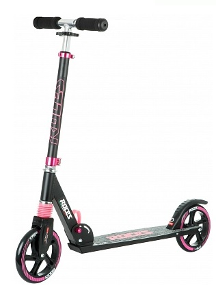

Самокат
Краткое описание товара
Практичный складной городской самокат. Колеса диаметром 175 мм.
Характеристики товара
- Количество колес - 2
- Материал рамы - алюминий
- Высота рулевой стойки - 80-99см
- Страна производства - Россия
- Срок гарантии - 3 года
Подробное описание товара
Амортизатор рулевого колеса смягчает нагрузки на неровной дороге. Усиленная конструкция деки выдерживает нагрузку до 100 кг. 4 положения рулевой стойки, максимальная высота 99 см. Улучшенный накат - колеса диаметром 175 мм. Комфортные мягкие грипсы изготовлены из пеноматериала.